Step-by-step help for making Chrome your default browser, removing OneLaunch, setting Highland as the startup page, and adding Highland to the desktop.
Favorites / bookmarks: Your Chrome bookmarks should stay in Chrome. Changing the default browser and removing OneLaunch should not erase Chrome bookmarks.
First check: If Google Chrome is missing, install Google Chrome first. After it is installed, come back to this guide.
1 of 7
Make Chrome the default browser
Click Start.
2 of 7
Make Chrome the default browser
Click Settings.
3 of 7
Make Chrome the default browser
Click Apps.
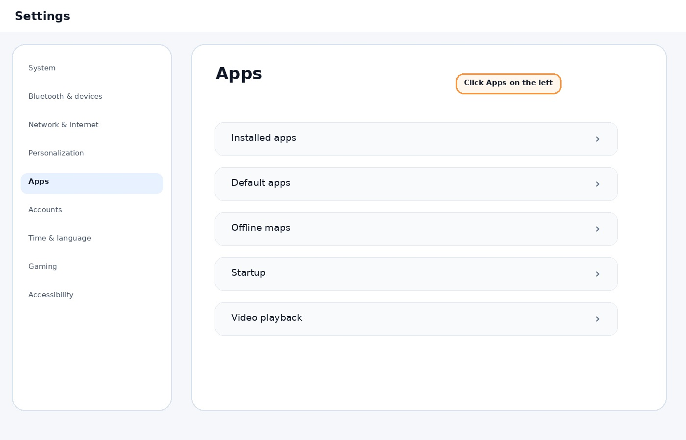
4 of 7
Make Chrome the default browser
Click Default apps.
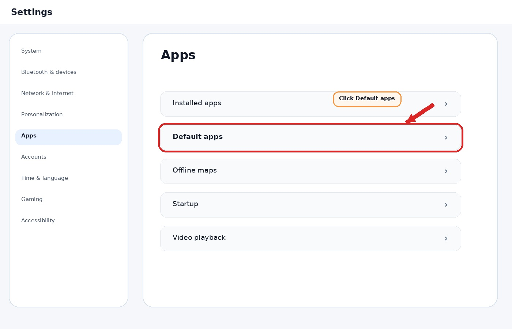
5 of 7
Make Chrome the default browser
Search for Chrome if needed, then click Google Chrome.
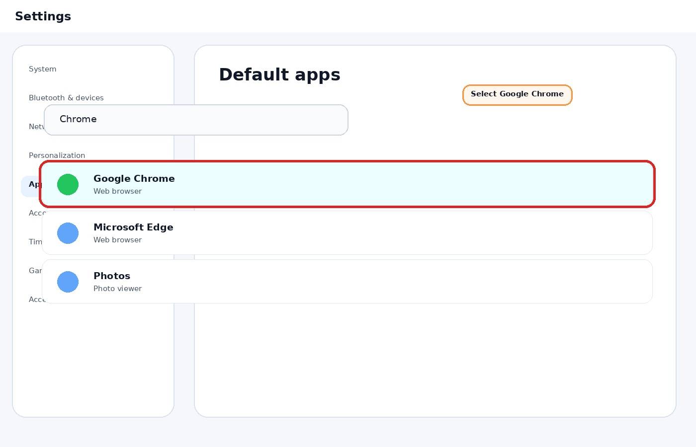
6 of 7
Make Chrome the default browser
Make sure HTTP and HTTPS say Google Chrome.
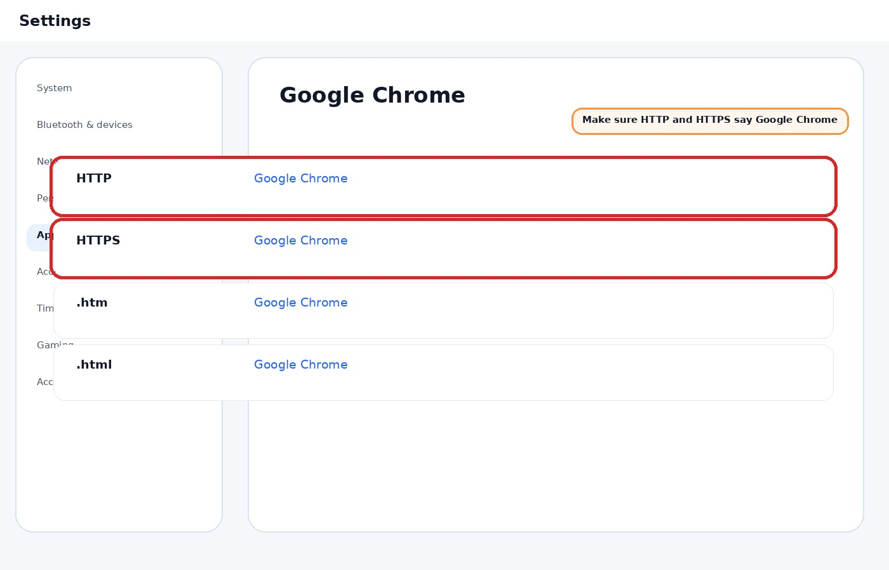
7 of 7
Make Chrome the default browser
Chrome is now your default browser.
1 of 8
Remove OneLaunch
Click Start.
2 of 8
Remove OneLaunch
Click Settings.
3 of 8
Remove OneLaunch
Click Apps.
4 of 8
Remove OneLaunch
Click Installed apps.
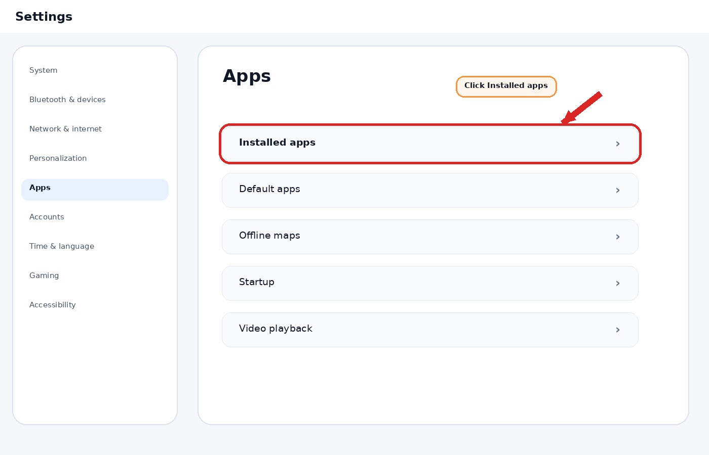
5 of 8
Remove OneLaunch
Find OneLaunch.
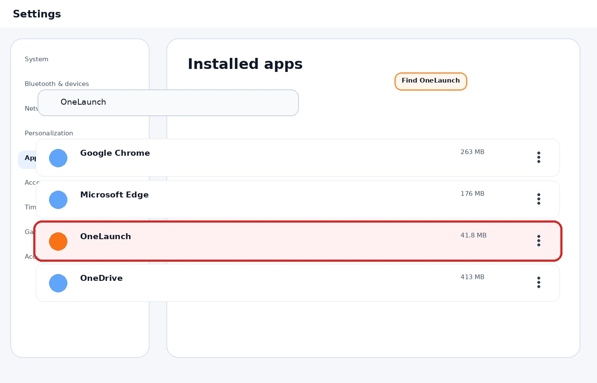
6 of 8
Remove OneLaunch
Click the 3 dots next to OneLaunch.
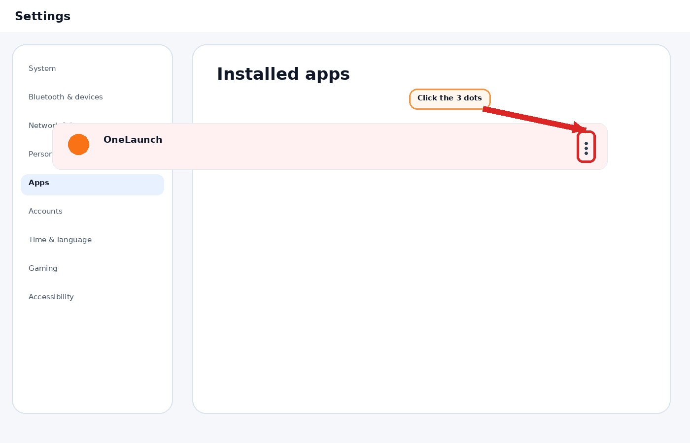
7 of 8
Remove OneLaunch
Click Uninstall.
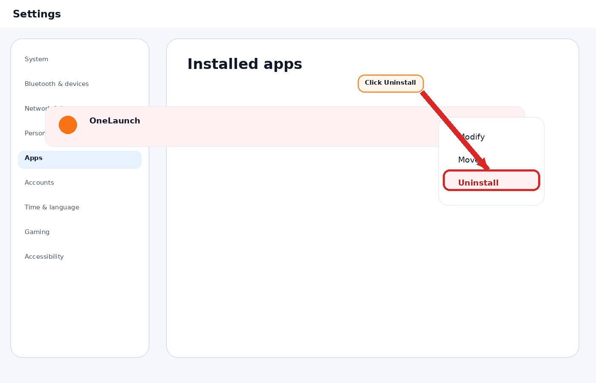
8 of 8
Remove OneLaunch
Click Uninstall again.
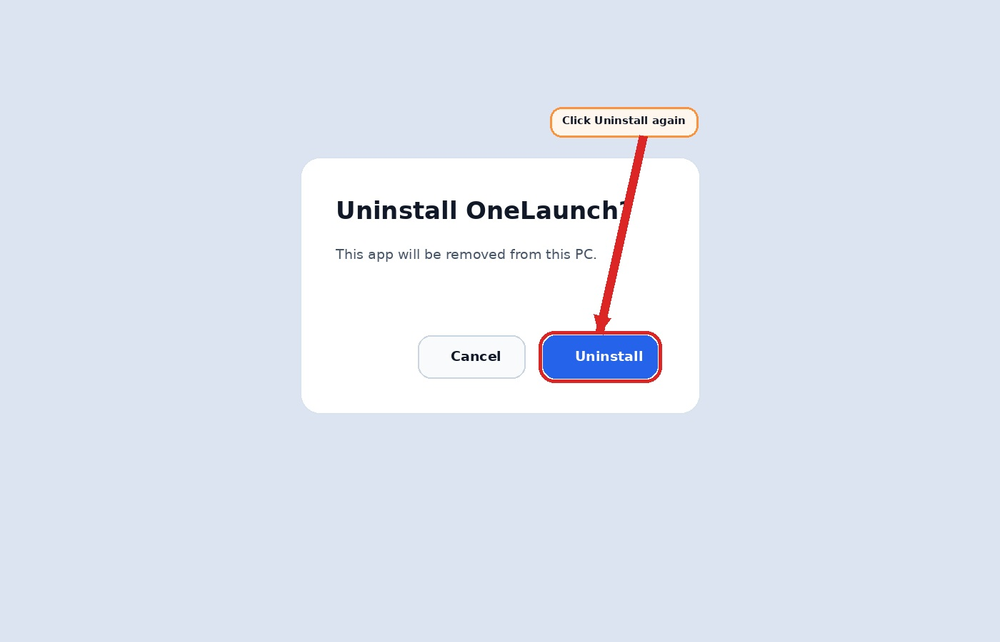
1 of 6
Set Highland as the startup page
Open Google Chrome.
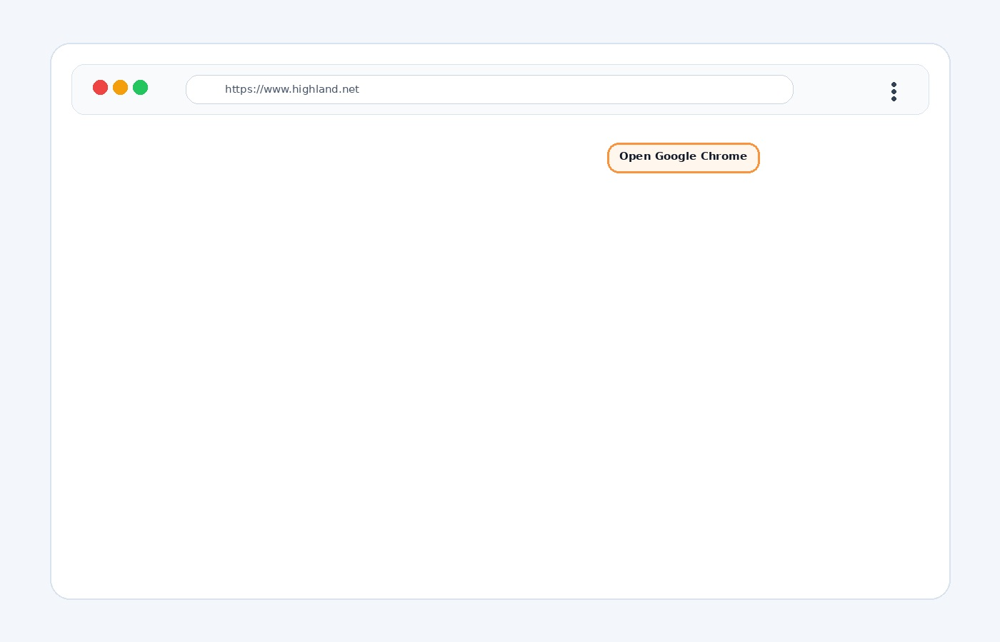
2 of 6
Set Highland as the startup page
Click the 3 dots.
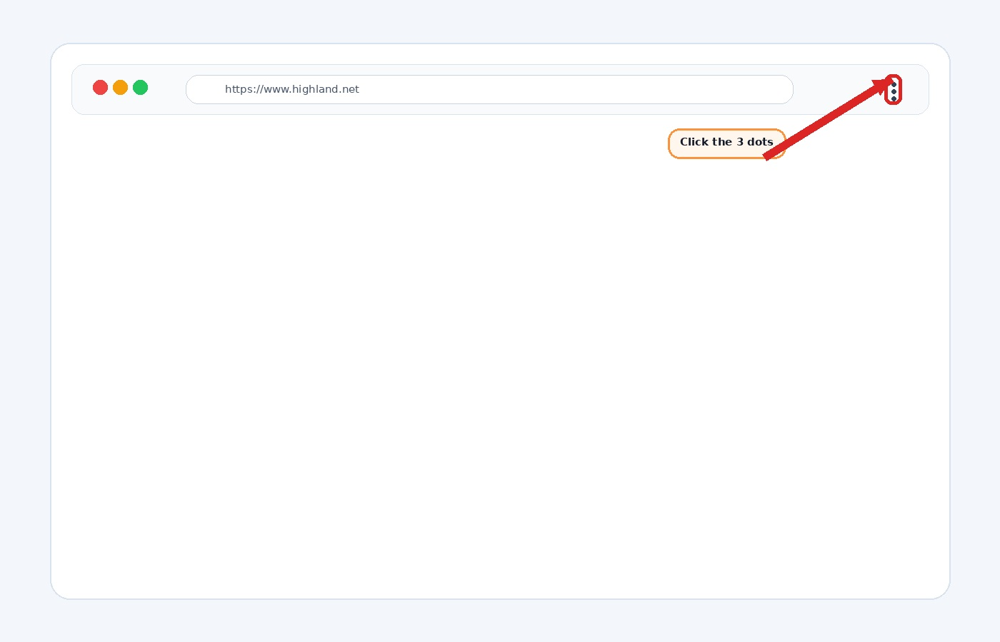
3 of 6
Set Highland as the startup page
Click Settings.
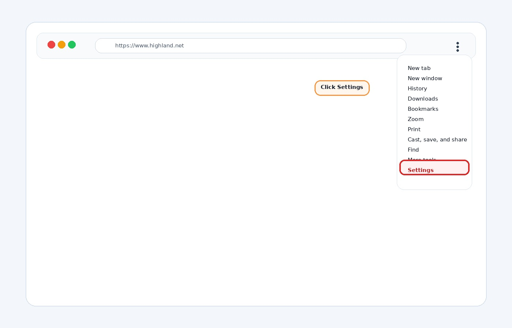
4 of 6
Set Highland as the startup page
Under On startup, choose Open a specific page or set of pages.
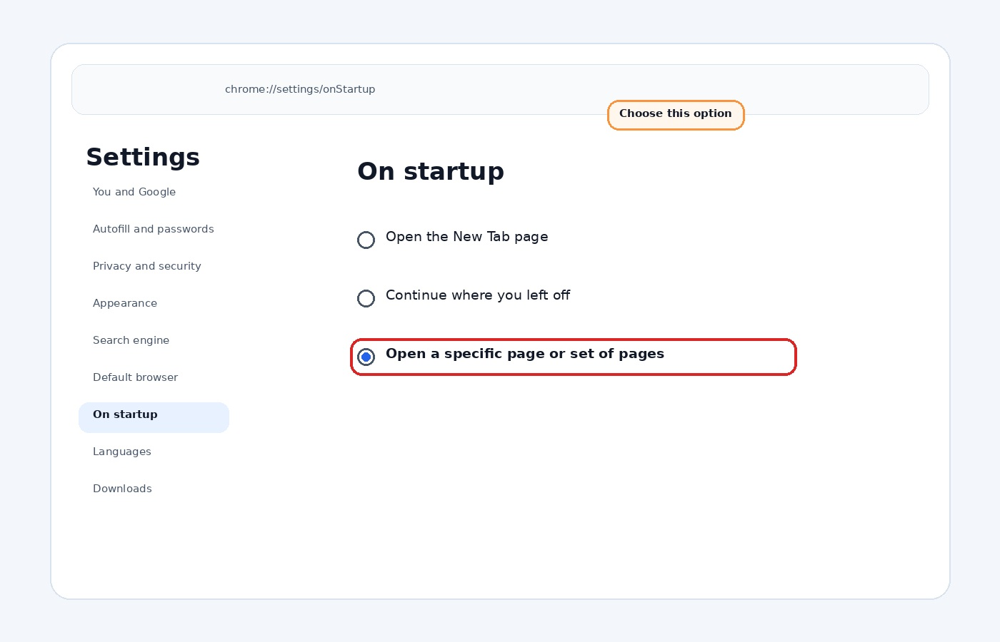
5 of 6
Set Highland as the startup page
Click Add a new page.
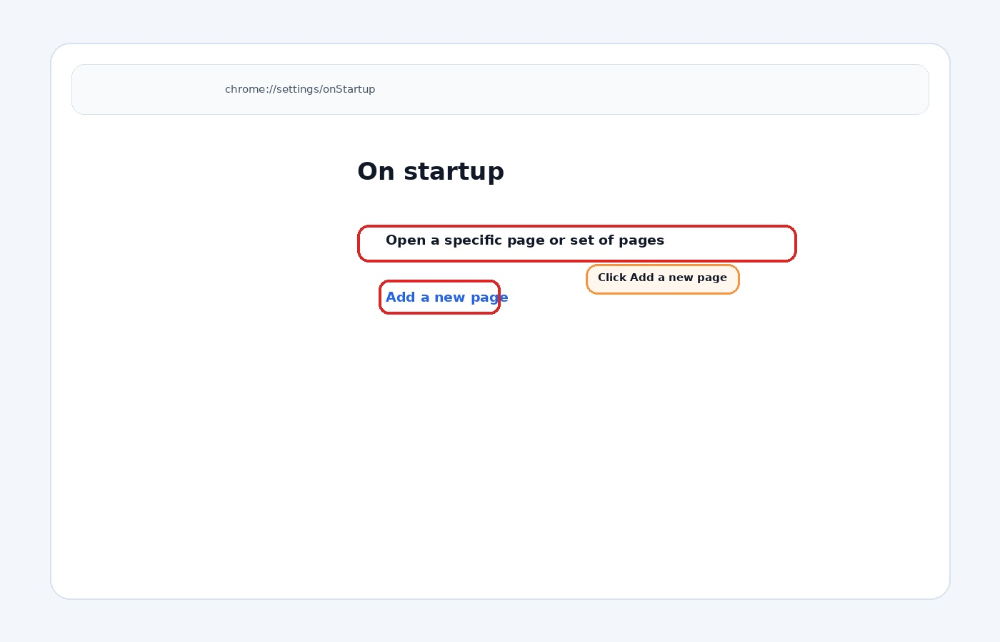
6 of 6
Set Highland as the startup page
Type https://www.highland.net and click Add.
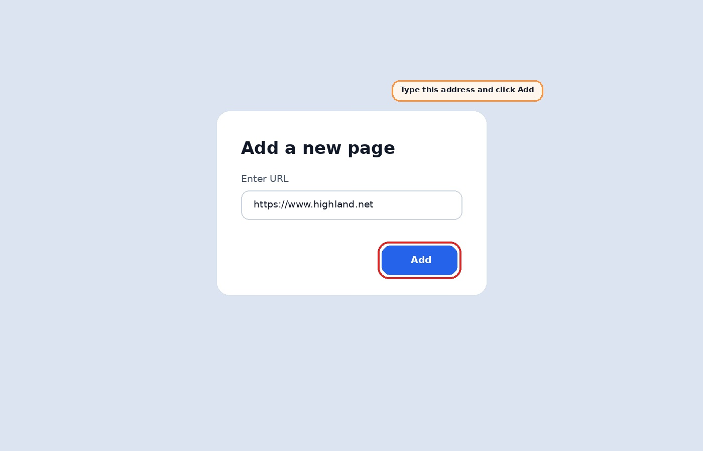
1 of 4
Add Highland to the desktop
Open https://www.highland.net in Chrome.
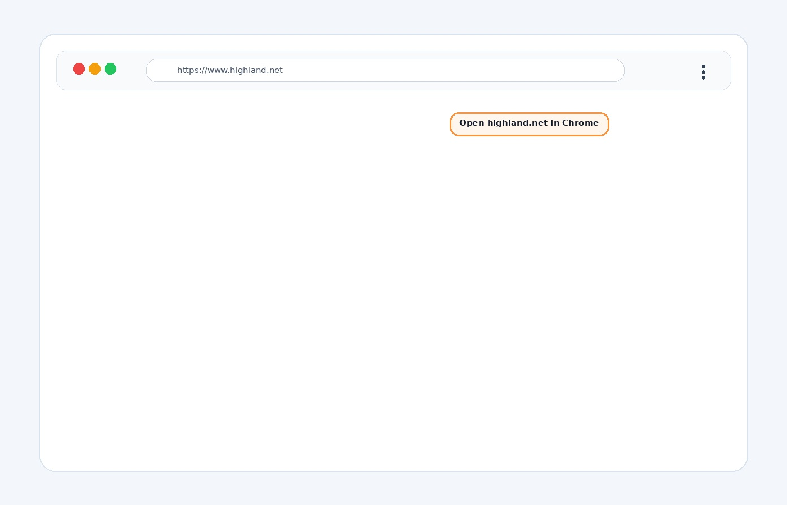
2 of 4
Add Highland to the desktop
Click the 3 dots, then click Cast, save, and share.